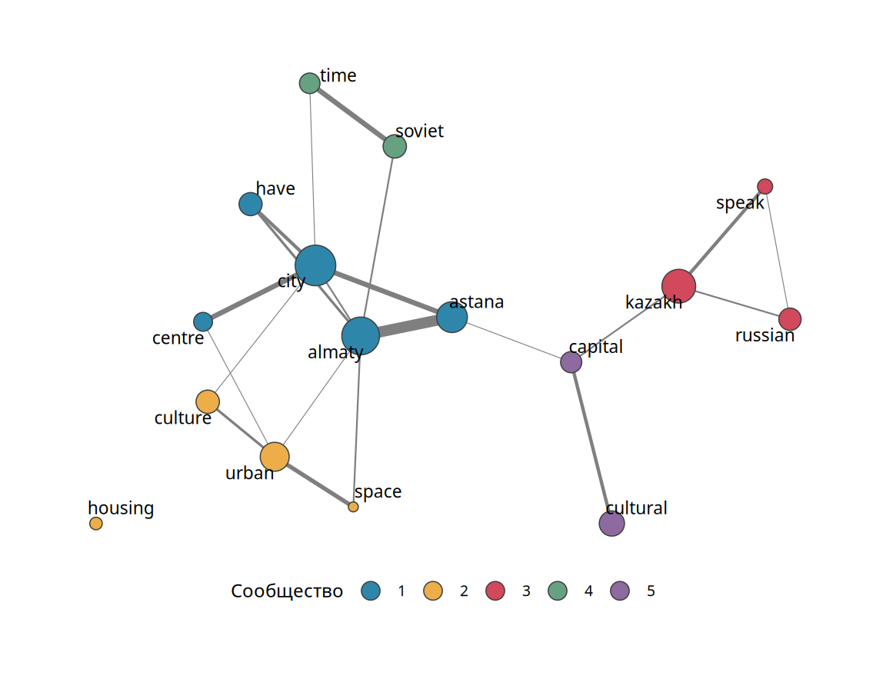
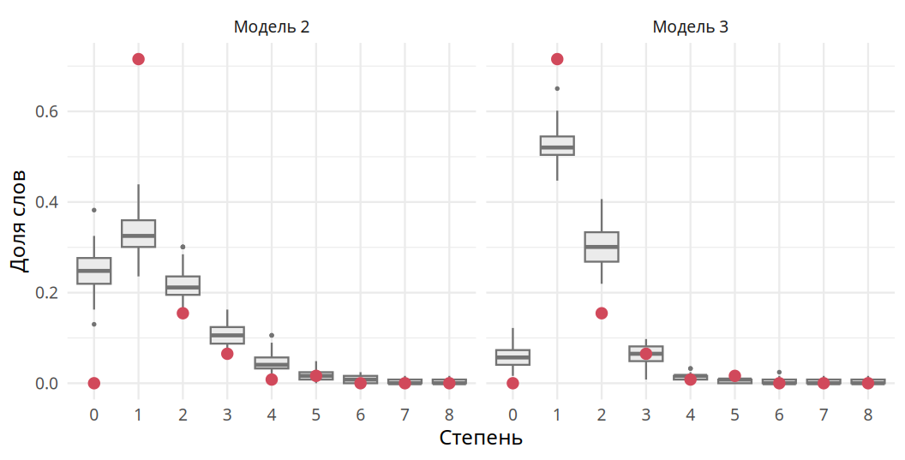

library(tidyverse)
library(udpipe)
library(igraph)
files <- list.files("data/articles", full.names = TRUE)
texts <- tibble(doc_id = basename(files), text = map_chr(files, read_file))7 Практикум: семантическая сеть
В последней главе мы пройдём все этапы сетевого анализа на одном примере: от сырых данных к сети, от сети к её описанию, от описания к модели. Данными будут тексты. Узлами станут слова, связями станут случаи, когда два слова стоят рядом. Такую сеть называют семантической. Она устроена так же, как сети из предыдущих глав. Меняется только природа узлов и связей. Поэтому все инструменты книги к ней применимы.
Представим текст как последовательность слов A, B, C. Выберем окно: расстояние, на котором два слова считаются соседями. Если слово B оказалось в окне слова A, проведём между ними связь. Чем чаще пара встречается в тексте, тем больше вес связи. Основание метода простое: слова, которые часто стоят рядом, связаны по смыслу. В медицинских журналах рядом стоят «курение» и «болезни лёгких». В статьях о новой столице Казахстана рядом стоят «Астана» и «Назарбаев».
В этой главе код показан полностью. Его можно выполнять по ходу чтения.
7.1 Корпус и разметка
Корпусом называют набор текстов, которые мы анализируем. Наш корпус состоит из фрагментов четырёх англоязычных статей об Астане и Алматы. Они лежат в папке data/articles. Имя файла составлено из фамилии автора, года и ключевого слова. Основным примером будет статья Алимы Биссеновой о различиях между двумя городами (Bissenova 2017 г.).
Компьютер видит текст как строку символов. Прежде чем строить сеть, текст нужно разметить. Разметка включает три шага. Токенизация делит текст на токены: слова и знаки препинания. Лемматизация приводит каждое слово к начальной форме (лемме). Без неё «ученики», «учеников» и «ученикам» стали бы тремя разными узлами. Определение частей речи (part-of-speech tagging) помечает каждый токен как существительное, глагол, прилагательное и т. д.
Все три шага выполняет пакет udpipe (Wijffels 2023 г.) с помощью заранее обученной модели для английского языка. Модель хранится в папке data. Её можно скачать функцией udpipe_download_model().
model <- udpipe_load_model("data/english-ewt-ud-2.5-191206.udpipe")
ann <- udpipe_annotate(model, texts$text, doc_id = texts$doc_id) %>%
as_tibble()Результат представляет собой таблицу, в которой одна строка соответствует одному токену. Токены идут в порядке следования в тексте. В табл. 7.1 показано начало статьи Биссеновой. Столбец upos содержит часть речи: NOUN означает существительное, VERB глагол, ADJ прилагательное, PROPN имя собственное, ADP предлог, DET артикль.
| token | lemma | upos |
|---|---|---|
| As | as | SCONJ |
| the | the | DET |
| seat | seat | NOUN |
| of | of | ADP |
| the | the | DET |
| Kazakh | Kazakh | PROPN |
| government | government | NOUN |
| and | and | CCONJ |
| a | a | DET |
Модель ошибается. На научных текстах ошибок немного. На расшифровках устной речи их больше. Модель может принять глагол за существительное или неверно восстановить лемму. Для учебного примера эти ошибки несущественны. В серьёзном исследовании результат разметки стоит выборочно проверить.
Служебные части речи (предлоги, артикли, союзы) несут мало смысла. Оставим только существительные, прилагательные, глаголы и имена собственные. Леммы переведём в нижний регистр, чтобы «Almaty» в начале предложения не отличалось от «almaty» в середине. Заодно уберём знаки препинания, прилипшие к краям слов.
words <- ann %>%
filter(doc_id == "bissenova-2017-fortress.txt",
upos %in% c("NOUN", "ADJ", "VERB", "PROPN")) %>%
mutate(word = str_to_lower(lemma),
word = str_remove_all(word, "^\\W+|\\W+$")) %>%
filter(word != "")После фильтрации в статье осталось 5843 слов. Этот шаг похож на удаление стоп-слов, но опирается на грамматику, а не на готовый список.
7.2 От коллокаций к графу
Пару слов, которые встретились рядом, называют коллокацией. Главное решение здесь состоит в размере окна. Где кончается «рядом»? Одни считают соседями только слова, стоящие подряд. Другие считают соседями все слова одного предложения. Теоретически правильного ответа нет. Практический ответ состоит в том, чтобы попробовать несколько размеров окна и сравнить результаты. Мы возьмём самое узкое окно: соседями считаются слова, стоящие подряд после фильтрации. Функция keywords_collocation() считает такие пары и оставляет те, что встретились не меньше двух раз (n_min = 2).
coll <- keywords_collocation(words, term = "word", group = "doc_id",
ngram_max = 2, n_min = 2) %>%
as_tibble()| left | right | freq | pmi |
|---|---|---|---|
| alma | ata | 12 | 8,8 |
| kazakh | language | 9 | 4,8 |
| almaty | astana | 9 | 2,4 |
| soviet | time | 8 | 5,3 |
| rural | migrant | 7 | 6,4 |
| urban | space | 7 | 5,6 |
| shala | kazakh | 7 | 4,9 |
| cultural | capital | 6 | 4,5 |
Мы получили 114 коллокаций. Самые частые из них показаны в табл. 7.2. Многие оказываются устойчивыми выражениями: «Alma-Ata» (старое название Алматы), «Soviet time», «urban space». Встречаются имена и географические названия из нескольких слов. Числа для udpipe тоже токены, поэтому пара «1970, 1980» из выражения «1970s and 1980s» тоже стала коллокацией.
Столбец pmi содержит точечную взаимную информацию (pointwise mutual information):
\[ \text{PMI}(a, b) = \log_2 \frac{p(a, b)}{p(a)\, p(b)}, \]
где \(p(a, b)\) означает долю пары среди всех пар, а \(p(a)\) и \(p(b)\) означают доли отдельных слов. Если бы слова располагались независимо друг от друга, доля пары равнялась бы произведению \(p(a)\, p(b)\). Дробь показывает, во сколько раз реальная доля пары больше этой ожидаемой доли. Запись \(\log_2\) обозначает логарифм по основанию 2. Поэтому PMI, равный 1, означает, что пара встречается вдвое чаще случайного. PMI, равный 3, означает превышение в \(2^3 = 8\) раз. Нулевой PMI означает, что слова соседствуют не чаще, чем при случайном расположении. Частая пара «almaty astana» имеет невысокий PMI: оба слова очень частые, поэтому их соседство отчасти случайно. Редкая пара с высоким PMI почти всегда является устойчивым выражением.
Таблица коллокаций уже является списком связей: левое слово, правое слово и частота пары. Список узлов составят все слова, вошедшие хотя бы в одну коллокацию, вместе с частотой их употребления. Петли (слово рядом с самим собой) удалим. Пары «almaty astana» и «astana almaty» udpipe считает разными. Для нас это одна связь. Поэтому граф будет ненаправленным, а частоты двух порядков слов сложатся.
freq <- count(words, word)
edges <- coll %>%
filter(left != right) %>%
select(left, right, freq)
nodes <- tibble(word = unique(c(edges$left, edges$right))) %>%
left_join(freq, by = "word")
sem <- graph_from_data_frame(edges, vertices = nodes, directed = FALSE) %>%
simplify(edge.attr.comb = "sum")Семантическая сеть статьи содержит 123 слов и 110 связей. Атрибут узла n хранит частоту слова, атрибут связи freq хранит частоту пары.
7.3 Описание сети
Нарисовать все 123 слов с подписями можно, но прочитать такой рисунок трудно. Распространённый приём состоит в том, чтобы оставить костяк сети: слова со степенью выше порога. На рис. 7.1 оставлены слова, у которых больше двух соседей. Размер узла показывает частоту слова. Цвет показывает сообщество, о котором речь пойдёт ниже.
backbone <- induced_subgraph(sem, V(sem)[degree(sem) > 2])
comm <- cluster_fast_greedy(sem, weights = E(sem)$freq)
Рисунок сразу показывает несколько тем. Вокруг «almaty» собраны слова о городской среде и культуре: «urban», «space», «culture», «creative». Отдельная группа описывает язык и происхождение: «kazakh», «russian», «speak», «shala». Слово «шала-казах» обозначает казахов, плохо говорящих по-казахски. Ещё одна группа связана с советским прошлым: «soviet», «time», «period», «late». Слово «astana» соединено с понятием столицы.
7.3.1 Сообщества
Темы на рисунке выделены не на глаз. Алгоритм поиска сообществ разбивает сеть на группы узлов, внутри которых связей много, а между которыми мало. Подробно сообщества и мера их качества (модулярность) разобраны в главе 4. Число найденных сообществ равно 31. Модулярность разбиения равна 0,76. Большинство сообществ состоит из двух слов: это устойчивые выражения или единичные упоминания. В табл. 7.3 приведены пять самых крупных сообществ. Их естественно читать как темы текста.
| Слов | Самые частые слова |
|---|---|
| 26 | city, almaty, astana, have, people, kazakhstan, centre |
| 14 | urban, culture, public, population, class, housing, space |
| 10 | kazakh, russian, call, language, speak, shala, division |
| 10 | soviet, time, period, same, former, late, union |
| 7 | cultural, capital, different, region, event, relocation, transfer |
7.3.2 Степени и посредничество
Распределение степеней очень неравномерно. У 88 слов из 123 ровно один сосед. У самых связанных слов, «city» и «almaty», соседей 18 и 11. Сеть полицентрична: несколько слов-хабов собирают вокруг себя остальные слова. Похоже устроена транспортная сеть страны с несколькими крупными аэропортами. Чтобы попасть из одного малого города в другой, приходится ехать через большие города.
Центральность по посредничеству (глава 3) показывает, какие слова соединяют разные части текста. Выше всего она у слов «almaty», «city», «astana» и «capital». У большинства слов посредничество нулевое. Хороший пример даёт слово «city». Оно соединяет синонимы «dweller» и «resident». Синонимы рядом не стоят: автор пишет либо «city dweller», либо «city resident». Зато оба стоят рядом с «city».
Это свойство полезно на практике. Если две группы людей употребляют одно слово в разных смыслах, вокруг слова образуются два несвязанных кластера. Само слово служит мостом между ними и получает высокое посредничество. Так можно сравнивать, например, язык официальных документов и язык интервью с жителями.
Наконец, степень слова почти линейно растёт с частотой употребления. Чем чаще слово встречается, тем больше у него возможностей оказаться рядом с новыми словами.
words_df <- tibble(word = V(sem)$name, n = V(sem)$n, degree = degree(sem))
fit <- lm(degree ~ I(n / 10), data = words_df)Каждые десять употреблений добавляют слову в среднем 0,91 соседа. Частота объясняет 81% разброса степеней.
7.4 Модель образования связей
Описание показывает, как устроена сеть. Модель помогает понять, какие процессы могли её породить. Для этого служат экспоненциальные модели случайных графов, ERGM (глава 6). В сетях дружбы механизмы интуитивно понятны: люди отвечают взаимностью, дружат с похожими, знакомятся через общих друзей. Слова не выбирают соседей. Механизмы приходится продумать заново. Вот несколько кандидатов.
- Устойчивые выражения: «Soviet time», «urban space» всегда идут вместе.
- Имена людей и названия мест из нескольких слов.
- Определения при существительных. Прилагательное уточняет существительное, поэтому прилагательные чаще соседствуют с существительными, чем друг с другом.
- Частота. Слово, употреблённое двести раз, имеет больше шансов оказаться рядом с другим словом, чем слово, употреблённое дважды.
Последний механизм проще всего проверить. Пакет ergm работает с объектами пакета network. Преобразуем граф функцией asNetwork() из пакета intergraph.
library(ergm)
net <- intergraph::asNetwork(sem)
m1 <- ergm(net ~ edges + nodecov("n"))
m2 <- ergm(net ~ edges + nodecov("n") + absdiff("n"))
m3 <- ergm(net ~ edges + nodecov("n") + absdiff("n") +
gwdegree(0.69, fixed = TRUE) +
gwesp(0.69, fixed = TRUE) +
gwdsp(0.69, fixed = TRUE),
control = control.ergm(seed = 1312, MCMC.burnin = 50000,
MCMC.interval = 5000, MCMC.samplesize = 2000))7.4.1 Частота слова
Модель 1 содержит два члена. Член edges играет роль свободного члена логистической регрессии. Он задаёт базовую вероятность связи. Член nodecov("n") добавляет к логарифму шансов связи между словами \(i\) и \(j\) слагаемое \(\theta (n_i + n_j)\), где \(n_i\) означает частоту слова \(i\). Результаты всех моделей собраны в табл. 7.4. Коэффициент при edges большой и отрицательный: сеть разреженная. Коэффициент при nodecov.n положительный: частые слова чаще связаны.
Коэффициенты удобно перевести в вероятности. Для двух слов, каждое из которых встретилось 10 раз, вероятность связи равна \(\text{logit}^{-1}(-5{,}27 + 0{,}022 \cdot 20) \approx 0{,}8\%\). Для двух слов со 100 употреблениями каждое она равна 28%. Вывод ожидаемый. Модель с одной частотой служит отправной точкой.
7.4.2 Притягиваются ли частые слова
Модель 2 задаёт вопрос тоньше. Возможны два сценария. В первом текст состоит из нескольких тем. Каждая тема построена вокруг своего частого слова, но сами частые слова рядом не стоят. Во втором частые слова тянутся друг к другу. Член absdiff("n") добавляет слагаемое \(\theta\,|n_i - n_j|\): он реагирует на разницу частот в паре. Отрицательный коэффициент означает, что связь вероятнее между словами похожей частоты. Коэффициент получился отрицательным и маленьким (\(p = 0{,}04\)).
Прежде чем интерпретировать модель, нужно проверить, воспроизводит ли она сеть. Для этого из модели симулируют много сетей и сравнивают их с наблюдаемой по нескольким характеристикам (goodness of fit, GOF). Левая панель рис. 7.2 показывает результат для распределения степеней. Модель 2 ожидает заметную долю слов без соседей. В наблюдаемой сети таких слов нет совсем. Причина кроется в способе построения сети: узлами стали только слова, вошедшие хотя бы в одну коллокацию. Изолированных слов нет по построению. Модель, которая не знает об этом, неизбежно ошибается.

7.4.3 Структура связей
Модель 3 добавляет три структурных члена. Подробно они разобраны в главе 6. Здесь достаточно их смысла. В отличие от первых двух моделей, модель 3 оценивается с помощью симуляций по методу Монте-Карло для марковских цепей (MCMC). Поэтому в коде заданы более длинные цепи, чем по умолчанию. С настройками по умолчанию оценка этой модели иногда останавливается с сообщением «MCMLE estimation stuck». Удлинение цепей обычно решает проблему.
gwdegreeописывает форму распределения степеней.gwespописывает замыкание треугольников: связаны ли слова, у которых есть общий сосед.gwdspописывает число пар слов с общими соседями, независимо от того, связаны ли они сами.
| Член | Модель 1 | Модель 2 | Модель 3 |
|---|---|---|---|
| edges | −5,274*** (0,155) | −5,339*** (0,159) | −10,160*** (0,899) |
| nodecov.n | 0,022*** (0,002) | 0,028*** (0,004) | 0,075*** (0,011) |
| absdiff.n | −0,009* (0,004) | −0,004 (0,006) | |
| gwdeg.fixed.0.69 | 4,011*** (0,707) | ||
| gwesp.fixed.0.69 | 0,087 (0,199) | ||
| gwdsp.fixed.0.69 | −0,322** (0,110) | ||
| AIC | 1012 | 1010 | 947 |
После добавления структурных членов разница частот перестаёт быть значимой (\(p = 0{,}54\)). Её эффект объясняется другими процессами. Распределение степеней теперь воспроизводится хорошо (правая панель рис. 7.2). AIC снизился с 1010 до 947.
Коэффициенты структурных членов требуют осторожности. Положительный коэффициент при gwdegree часто ошибочно читают как «богатые богатеют». На деле он означает обратное: модель поощряет распределение связей по многим узлам и штрафует изолированные узлы (Levy 2016 г.). В нашей сети он прежде всего отражает отсутствие слов без соседей. Сосредоточенность связей на немногих хабах объясняет не gwdegree, а частота слова (nodecov). Коэффициент при gwesp незначим: если два слова стоят рядом с одним и тем же хабом, это не делает их соседями. Коэффициент при gwdsp отрицательный: пар слов с общими соседями меньше, чем предсказывали бы остальные члены модели. Редкие слова обычно привязаны к одному хабу, а не к нескольким сразу.
Вместе результаты складываются в простую картину. Текст построен вокруг небольшого набора частых слов-хабов. Каждый хаб окружён вспомогательными словами. Вспомогательные слова между собой почти не связаны. Похоже устроена организация, в которой подчинённые общаются с начальником отдела, но не друг с другом.
Анализ сетей не обязан заканчиваться моделью. ERGM относится к нишевым инструментам. Он популярен в академических исследованиях, когда нужно проверить гипотезы о механизмах образования связей. Для многих практических задач описательного анализа из предыдущих разделов достаточно.
7.5 Вопросы и упражнения
- Постройте семантическую сеть для другой статьи корпуса. Какие слова стали хабами? Совпадают ли темы, выделенные сообществами, с темами самой статьи?
- Расширьте окно: считайте соседями слова на расстоянии до трёх позиций. Подойдёт функция
cooccurrence()из пакета udpipe с аргументомskipgram. Как изменились число связей, список хабов и модулярность? - Объясните, почему слова «dweller» и «resident» связаны с «city», но не связаны между собой. Какую величину центральности это повышает у «city»?
- Подгоните модель 3 без члена
gwdegreeи сравните её распределение степеней с наблюдаемым. Как изменились AIC и коэффициент приnodecov? - Как изменилась бы картина, если бы мы оставили служебные части речи? Какие слова стали бы хабами?